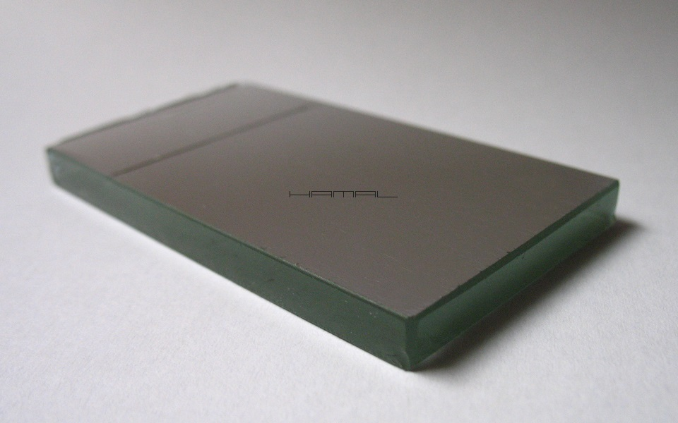
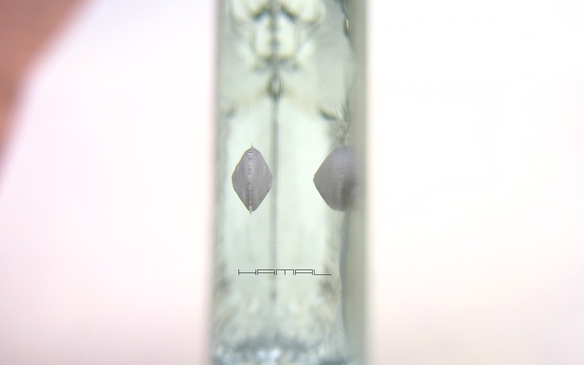
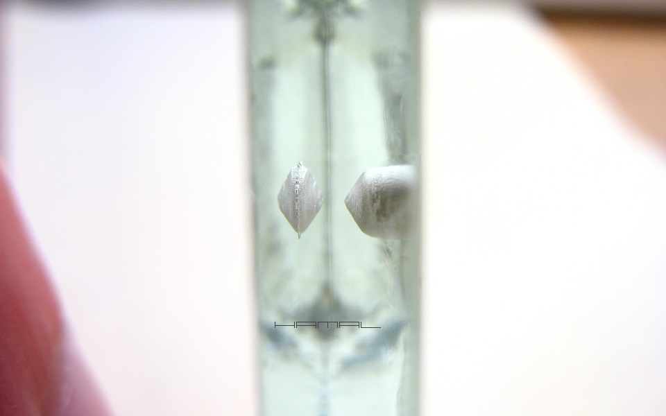
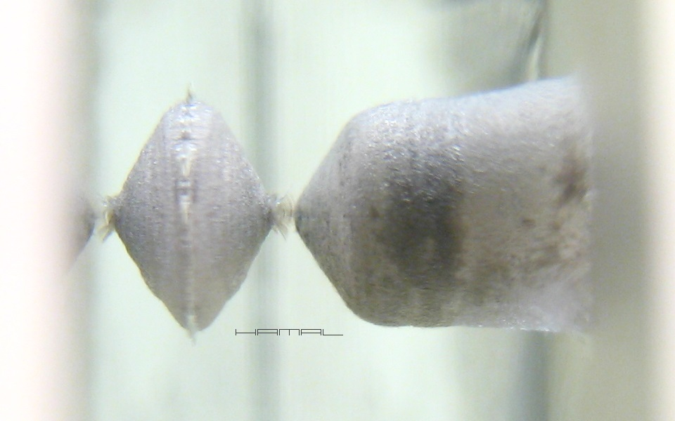
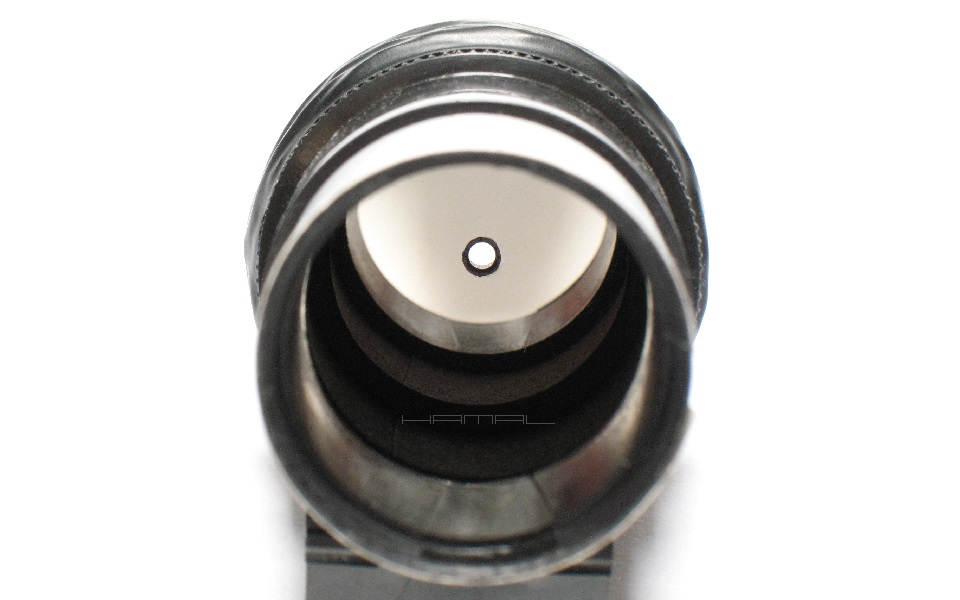
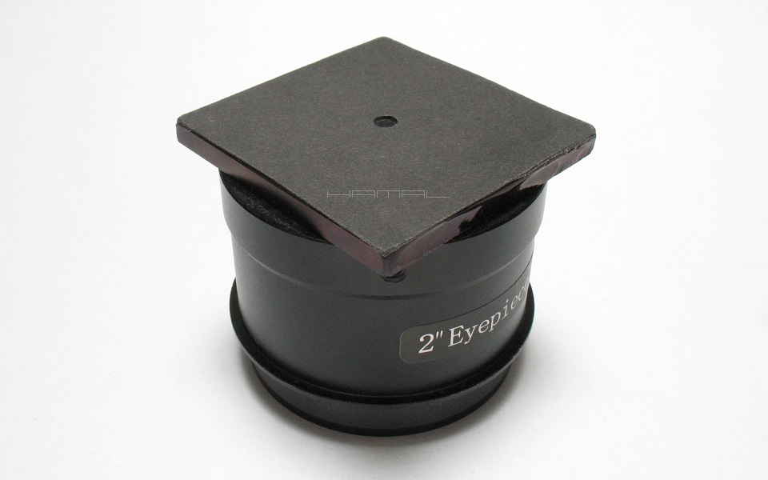
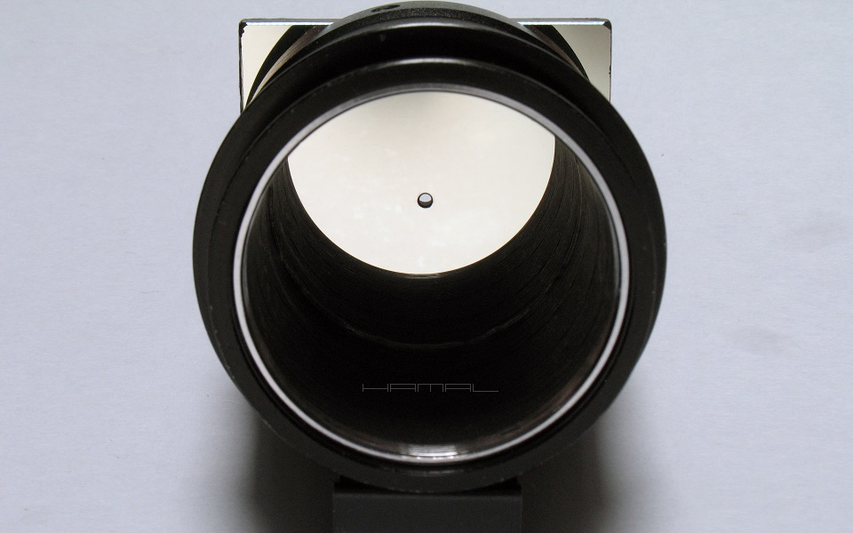

.
Samodzielne wykonanie Autokolimatora
|
Autokolimator służy do precyzyjnej kolimacji teleskopów systemu Newtona, najczęściej w astrofotografii dużego formatu, mniej przydatny będzie przy sprzęcie niższej klasy posiadającym wiele ugięć i luzów, oraz zbyt uciążliwy do kolimacji obserwacyjnej. Od zwykłego kolimatora z otworkiem różni go fakt, iż posiadania od wewnętrznej strony lusterko, dzięki któremu zachodzi zjawisko wielu odbić stanowiące klucz tej techniki. Samodzielne wykonanie Atokolimatora nie jest proste, ale jest możliwe, jak widać poniżej :) OPIS BUDOWY . Najtrudniejszym etapem wykonania Autokolimatora jest wykonanie otworka w lusterku. Wywiercenie dziurki o średnicy 3mm, w szkle o grubości 5mm, nie jest proste, a gdy dodatkowo z jednej strony szkła są powłoki odblaskowej, amatorsko jest wręcz karkołomne. Lustro przeznaczone do tego celu musi posiadać odsłoniętą powłokę odblaskową, podobnie jak lustra teleskopu, lustro z łazienki się nie nadaje. Lustro takie najłatwiej pozyskać od firmy serwisującej kserokopiarki, można odkupić takowe wymontowane ze starego urządzenia. Będzie to długi wąski pasek, który można pociąć na kilka mniejszych kawałków, co pozwoli nam dokonać wielu prób, bez obawy o zniszczenie jedynego egzemplarza. Nowsze urządzenia posiadają lustra zbyt wąskie do naszych zastosowań, ale te starsze, zawierają lustra na tyle szerokie, że możliwe jest wykonanie nawet 2" wersji przyrządu.  Otwór w lustrze wykonałem małą wiertarką modelarską, wiercąc przemiennie wiertłami 3,3mm i 2,5mm, ostrząc je co chwilę na drobnym papierze ściernym. Wiercenie rozpocząłem od strony powłoki odblaskowej, aby w przypadku pojawienia się zbyt dużych odprysków zaprzestać prac i rozpocząć je na innym lustrze. Po osiągnięciu pewnej głębokości (lewa strona zdjęć poniżej) przechodzę do wiercenia otworu głównego od strony pozbawionej powłoki (prawa strona zdjęć poniżej). Gdy oba odwierty się spotkają, przechodzę do obróbki otworu okrągłym pilnikiem iglakiem. Zadanie należy wykonywać bardzo ostrożnie aż do uzyskania pożądanego otworu. Lustro z kserokopiarki jest wyjątkowo twarde, ale dzięki tej właściwości, ma mniejsze tendencje do odprysków, co w naszym przypadku jest zaletą.    Drugim krytycznym etapem prac, jest osadzenie gotowego lusterka z otworkiem na korpusie, gdyż otworek powinien znajdować się idealnie na środku, a powierzchnia odblaskowa niebywale idealnie prostopadle do osi tulei obudowy. Łatwiej spełnić powyższe wymogi wykonując kolimator w wersji 2". Kolimator na koniec powinien przejść serię testów podobnych do kolimacji kolimatora laserowego, z tym wyjątkiem, że w tym przypadku, nie posiadamy świecącej kropki, której ruchy można obserwować, należy zatem posłużyć się innym lusterkiem, zamontować je daleko naprzeciw, następnie kręcąc Autkolimatorem obserwować przez jego otwór, czy następuje migracja wzajemnych refleksów. Jeśli następuje, to osadzenie lusterka Autokolimatora wymaga dalszych korekt, jeśli wszystko ani drgnie, oznacza to, że Autokolimator jest dobrze poskładany. Gotowy Autokolimator 1,25". .   Gotowy Autokolimator 2". .   
|